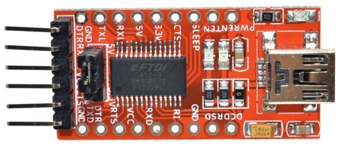

Flashing the LMS-ESP32 board
The latest firmware for this board can be downloaded from here: firmware_ESP32_ULAB_LVGL_SPIRAM_<timestamp>.bin. This is a version that supports the extra SP-RAM and has the latest UartRemote library integrated in its firmware. Furthermore, the ulab and LVGL libraries are also integrated. The firmware name shows the build timestamp.
Use the flash tool
Using the integrated USB UART on the ESP32 board, you can easily flash a
new firmware version on the board using the flash32.py scripts in
this github:
github.com/antonvh/slah-esp.
Flashing the esp-i2c-wifi board
The boards ship flashed, but you can reflash them with your own operating system or version of Micropython. There are two options: via a Mac or PC with a USB FTDI cable or via an EV3 brick and a serial port. Depending on the hardware you have laying around, choose the best option for you.
Micropython with integrated UartRemote library
For your convenience we compiled a micropython firmware with the UartRemote Library compiled as a frozen module. There is no need to upload the library seperately. The firmware can be found here micropython_v1.16_uartremote.bin
EV3 brick and serial port
Make sure your EV3 brick runs the latest version ev3dev. On that website there are very good guides for setting up ev3dev and Visual Studio Code. Use these guides to connect your brick over USB or Bluetooth. Once that is done, open a terminal to your EV3 in VS Code and get started. Make sure you have enabled network sharing on your laptop and created a working internet network connection from the screen of your EV3. You will know that you have an internet connection if your brick shows a valid IP number in the top left of the screen. Guides for Mac and PC are on ev3dev.org
To open an ssh terminal, right-click your brick in the EV3DEV DEVICE BROWSER in VS Code and select ‘open ssh terminal’
Download esptool.py and a micropython binary to your home directory on the ev3 brick.
curl -O -J https://raw.githubusercontent.com/espressif/esptool/master/esptool.py
curl -O -J https://micropython.org/resources/firmware/esp8266-20210618-v1.16.bin
Enable a serial port. The easiest way to do this is to change the port mode via brickman on the screen of your EV3 brick.


Connect the esp board with the breakt to port 1 of the EV3 brick. Make sure GND on the breakout board (top left) is aligned with GND on the ESP Board.
Put the esp in bootmode by holding the BOOT button while pressing and releasing the RESET button
Erase the esp flash like this:
python3 esptool.py --port /dev/tty_ev3-ports\:in1 erase_flash
Put the ESP in boot mode again, like in step 5. The write the flash like this:
python3 esptool.py --port /dev/tty_ev3-ports\:in1 --baud 460800 write_flash --flash_size=detect 0 esp8266-20210618-v1.16.bin
Reset the ESP by cycling the power or pressing RESET.
Check if you get the ESP MicroPython REPL over UART:
screen /dev/tty_ev3-ports\:in1 115200
You should get
>>>if you press enter. Try typing1+1(and enter) to see if the esp can do math! Now might be a good time to configure the WebREPL for easy access to your ESP.
press ctr-a and the k to exit screen.
FTDI Cable and Mac/PC/Linux
Using an FTDI USB serial convertor you can flash the ESP8266 with new firmware.

The new ESP board has an FTDI compatible ‘wobble’ connector. This allows you to insert the FTDI board without soldering the pins because due to the friction, the pins will make contact.
For the older type of board, you need some jumper wires to connect the
GND, +3.3V, TX and RX. Note that the TX and RX
pins need to be cross-connected (TX of FTDI to RX of ESP and vice
versa). Also ascertain that the jumper on the FTDI board is placed to
the 3.3V pin, as all logic of the ESP8266 is 3.3V. 5V logic signals will
cause damage to the ESP8266 board!
There is an automated flashing script that does everything here: https://github.com/antonvh/flash-esp We also have a esp_flash_config.py that will help you flash MicroPython to the ESP board and configure WebREPL and Wifi in MicroPython.
If you want to do it manually, this is what you type in the terminal:
pip3 install pyserial
curl -O -J https://raw.githubusercontent.com/espressif/esptool/master/esptool.py
curl -O -J https://micropython.org/resources/firmware/esp8266-20210618-v1.16.bin
python3 esptool.py --port /dev/cu.usbserial-AH0692NU erase_flash
Now press reset on the board, while holding the boot button. Note that you should probably change the /dev/ path in the last line, depending on your system.
Then go on:
python3 esptool.py --port /dev/cu.usbserial-AH0692NU --baud 460800 write_flash --flash_size=detect 0 esp8266-20210618-v1.16.bin
Press reset again, this time without the boot button pressed. Then go on:
screen /dev/cu.usbserial-AH0692NU
Hit return until you see >>>. Then: import webrepl_setup and follow
instructions. Press ctrl-a and then k to quit screen.